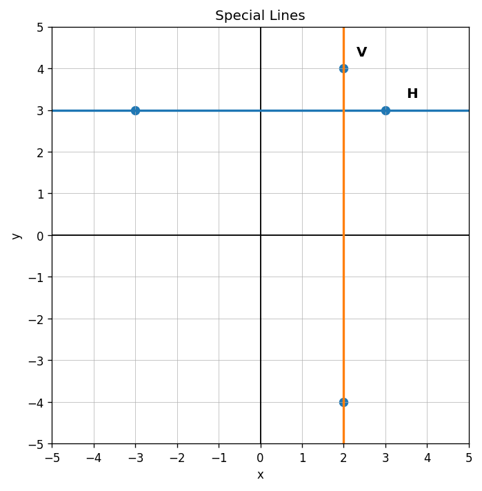
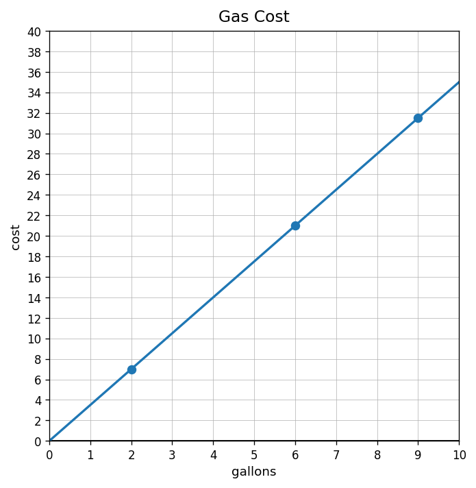
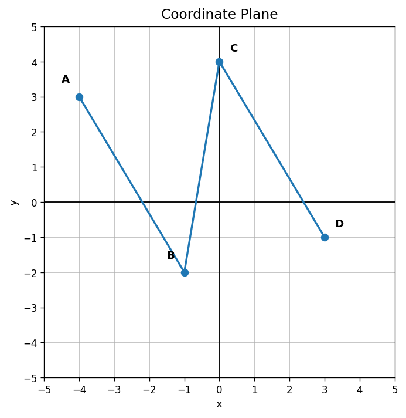

Extra Practice 2.1.4
Use the graph. Identify which line has slope $0$ and which line has undefined slope.

Find the rate of change shown in the table and state whether it is constant.
| $x$ | 1 | 3 | 5 | 7 |
|---|---|---|---|---|
| $y$ | 4 | 10 | 16 | 22 |
Find the slope between $(4,15)$ and $(10,3)$. Then explain whether using a graph or using differences would be more efficient.
The graph shows a gasoline cost relationship. Create a different gas-cost model with a larger rate of change, describe how its graph would compare, and explain what the slope means.

Identify the representation type and one feature you can read from it: $C=12m+25$.
For what input does the output equal 21?
| input | 0 | 2 | 4 | 6 |
|---|---|---|---|---|
| output | 5 | 13 | 21 | 29 |
Which equation best matches “a 20 dollar fee plus 4 dollars per person”?
- $y=20x+4$
- $y=4x+20$
- $y=24x$
Use the graph. What appears to be the starting value?

Write a verbal description that matches the table.
| weeks | 0 | 1 | 2 | 3 |
|---|---|---|---|---|
| points | 3 | 9 | 15 | 21 |
Without drawing, describe how you would graph the relationship $y=5x+2$ using a table.
A table starts at 4 and adds 6 each step. A graph starts at 6 and adds 4 each step. Explain why the representations do not match even though they use the same numbers.
A student must convince someone that a table, graph, and equation all represent the same situation. What evidence should the student show? Organize your answer as a checklist.
Use the coordinate plane. Which point has an $x$-coordinate of $0$?

A line crosses the $y$-axis at $(0,30)$ and the $x$-axis at $(10,0)$. Describe a possible context.
A student says, “The point $(2,9)$ means 2 outputs and 9 inputs.” Critique the statement.
Create three points that could lie on a straight-line graph with a positive trend. Explain how your points show a consistent pattern.